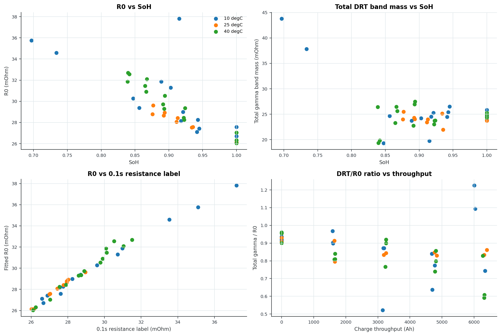

Zenodo Expt4 Time-Series DRT Pipeline, Section 8
Purpose
This section joins fitted GITT DRT-like features to Experiment 4 health labels. This is the first section that asks whether the features track ageing labels instead of merely fitting voltage.
Inputs
- Batch feature table:
[local path redacted]
Outputs
section_8_health_label_join_results.csv
section_8_feature_label_correlations.csv
section_8_health_label_join_summary.json
section_8_health_label_join.png
Results
- Joined rows: 40
- Cells:
A, B, C, D, E, F, G, H
- RPTs:
0, 2, 4, 6, 8
- Correlations computed: 189
Strongest Correlations
- low_soc_gamma_sum_ohm_slow_band_90_to_450_s_mean vs c2_capacity_mah: Spearman -0.998, Pearson -0.994, n=40
- low_soc_gamma_sum_ohm_slow_band_90_to_450_s_mean vs c10_capacity_mah: Spearman -0.998, Pearson -0.992, n=40
- low_soc_peak_1_gamma_ohm_mean vs c2_capacity_mah: Spearman -0.994, Pearson -0.994, n=40
- low_soc_peak_1_gamma_ohm_mean vs c10_capacity_mah: Spearman -0.994, Pearson -0.989, n=40
- mid_soc_r0_ohm_mean vs resistance_0p1s_ohm: Spearman 0.993, Pearson 0.989, n=40
- r0_ohm vs resistance_0p1s_ohm: Spearman 0.992, Pearson 0.990, n=40
- high_soc_r0_ohm_mean vs resistance_0p1s_ohm: Spearman 0.988, Pearson 0.977, n=40
- low_soc_gamma_sum_ohm_slow_band_90_to_450_s_mean vs soh: Spearman -0.987, Pearson -0.989, n=40
Interpretation
This is useful, but do not overread it. These are same-dataset associations from all-accepted-pulse GITT aggregates, not proof that the recovered DRT spectrum is physically correct. The next hard test is held-out-cell prediction inside temperature groups, because cross-temperature pooling can create fake-looking correlations.
Linked Graph
